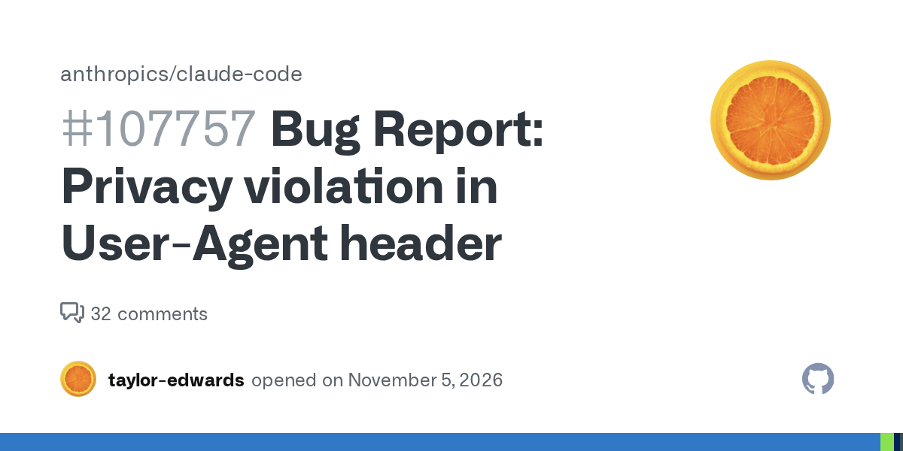
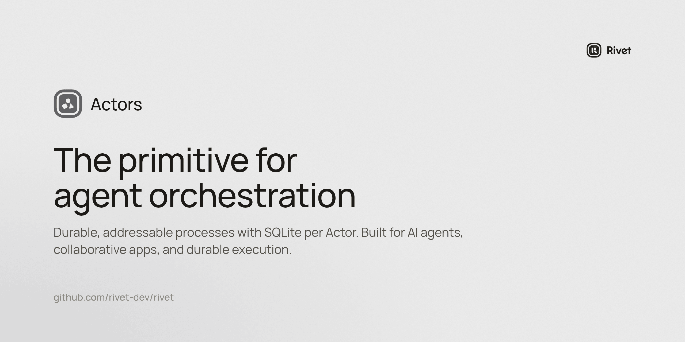
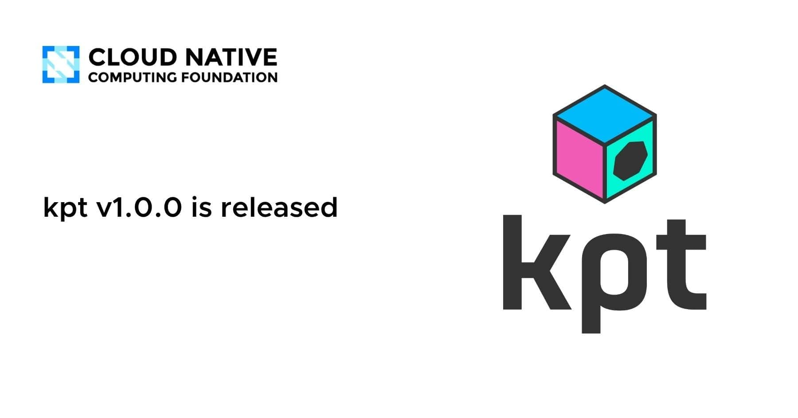
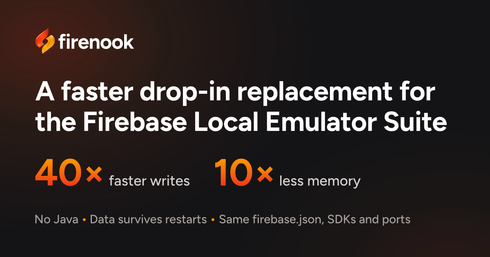

🔥 Top 3 (must read)
Claude Code sends your email address to websites
A GitHub issue says Claude Code sends the user's email address to websites it visits. It got 607 points and 207 comments on Hacker News, so many developers care about it. Why it matters: You use Claude Code every day, and your team may use it too. Read the issue and check what your setup sends before you roll it out to more people.

Launch HN: Rivet (YC W23) – Scale and Orchestrate Agents on S3
Rivet is an open-source tool to run and orchestrate (coordinate many running copies of) AI agents. It uses S3 as the storage layer. The launch post had 76 points and 43 comments on HN. Why it matters: If you build agent features on Node.js, this is one more option for running many agents without writing your own scheduler and state storage.

kpt v1.0.0 is released
The kpt toolchain for managing Kubernetes configuration reached v1.0.0 after several years as a pre-release. The CNCF blog post says this marks the project as more mature. Why it matters: A 1.0 release usually means a more stable API. Now is a good time to test kpt if you manage Kubernetes YAML across many services.

🛠 Tools & releases
kpt v1.0.0
: first stable release of the Kubernetes config toolchain.
🤖 AI for developers
Claude Code email address issue
: privacy concern with a big HN discussion (HN).
👔 Engineering & teams
Claude Code email issue
: a good reason to check what data your team's AI coding tools send out, and to agree on a team policy.
🎯 For me
The Claude Code issue is the top item for you. It touches both your daily tools and how your team adopts AI.
kpt 1.0 and Rivet fit your interest in Kubernetes and distributed systems.
Nothing today on Node.js, React, Flutter or automation testing.
💡 App ideas & indie builds
Stroq
: a local audit log of what your coding agent did and why. Problem: it is hard to review and trust what an agent changed. Inspiration: tools that make AI work easier to review are a growing niche, and this could also help code review on your team. (HN)

Firenook
: Firebase emulators rewritten in Rust. The author claims 40× faster writes and 10× less RAM. Problem: the official emulators are slow and use a lot of memory in local dev and CI. Inspiration: rewriting a slow dev tool can be a product by itself, and it is useful for Flutter + Firebase test pipelines. (HN)

Interruptible history podcast generator
: you ask for any history topic, it makes a podcast, and you can stop it to ask questions. Problem: podcasts are passive, so you cannot ask "wait, why?" Inspiration: voice-based learning you can talk back to, a format that also fits language-learning apps.
R
US WARN layoff notices database
: 58,000 filings covering 6 million workers in 47 states, all searchable. Problem: public layoff notices are spread across separate state websites. Inspiration: collect messy public data into one search, a simple and repeatable app pattern.
R
Automated student discounts
: a Mac app maker built a tool to check .edu emails and give out discount codes automatically. The maker says it brought 16 new paying users in one week. Problem: making each code by hand and checking .edu emails by hand is slow. Inspiration: fix your own small business pain, then sell the fix to other indie developers.
R
🎓 Try this
Try kpt v1.0.0 on one small service's Kubernetes config. See whether its package-and-function workflow makes your config changes easier to review than plain YAML or Helm.